The Whole Earth Catalogue: Favorite Covers
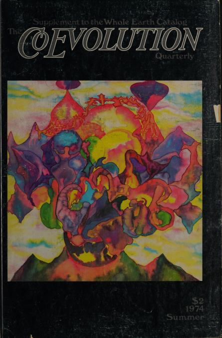
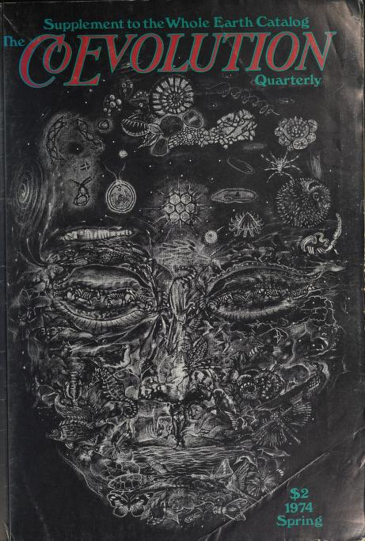
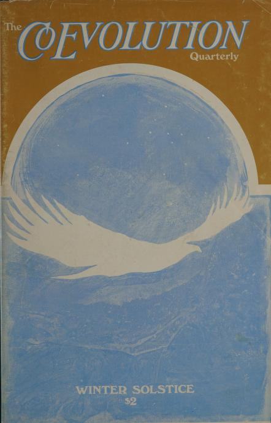
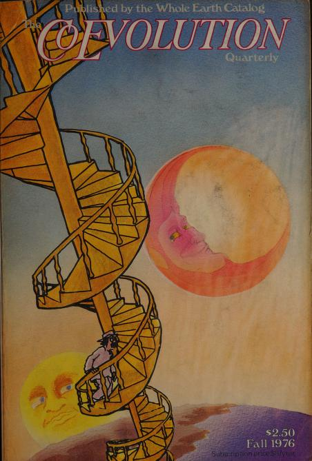
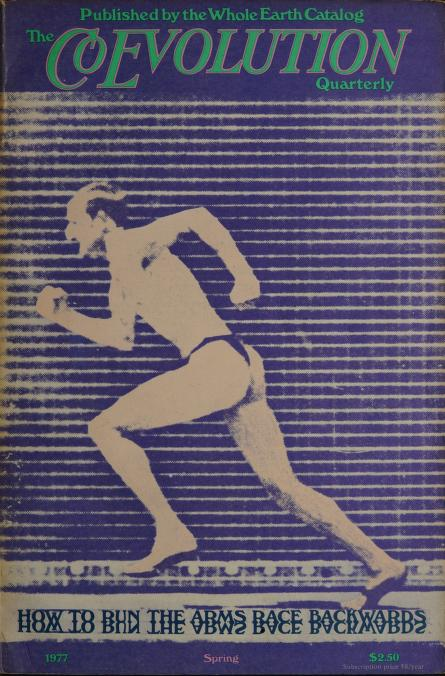
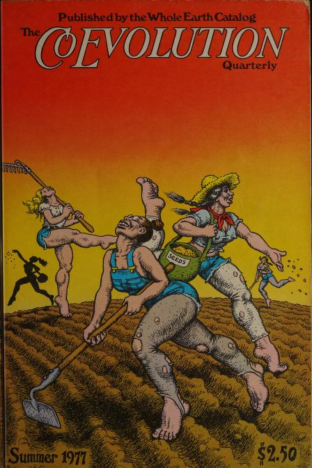
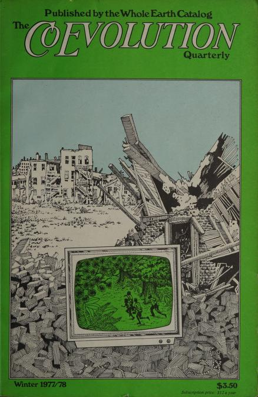
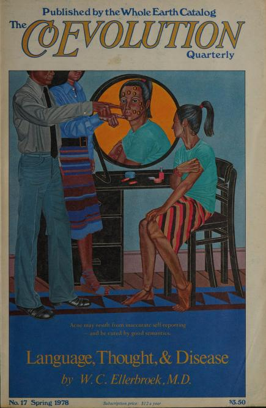
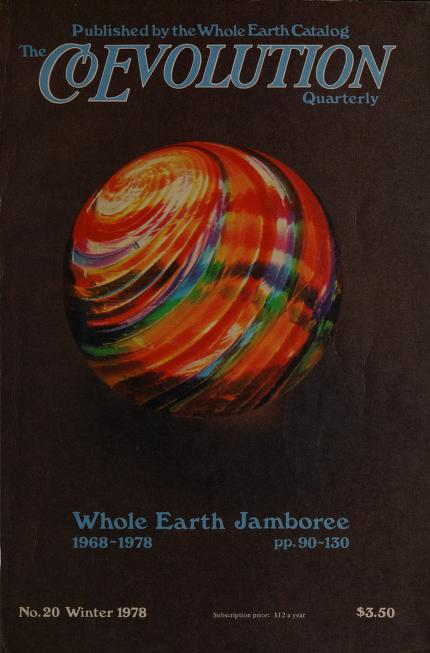
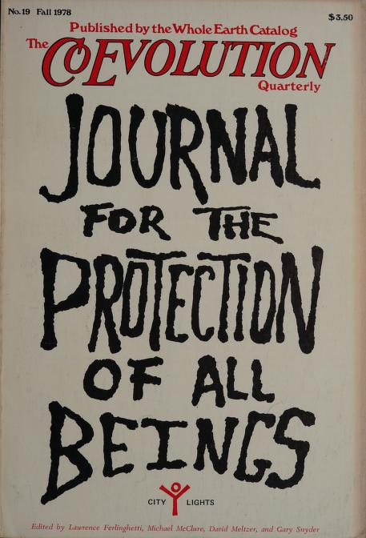
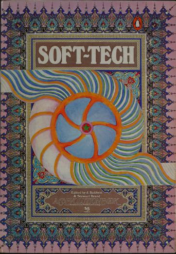
Going through the Whole Earth Catalogue today is fascinating because it's mission is to teach self sufficency, anti-consumerism and practical access to tools. These values feel so contrary to our current era. Most of our resources, knowledge, and experiences are through digital devices, making us constant consumers of curated content and services.